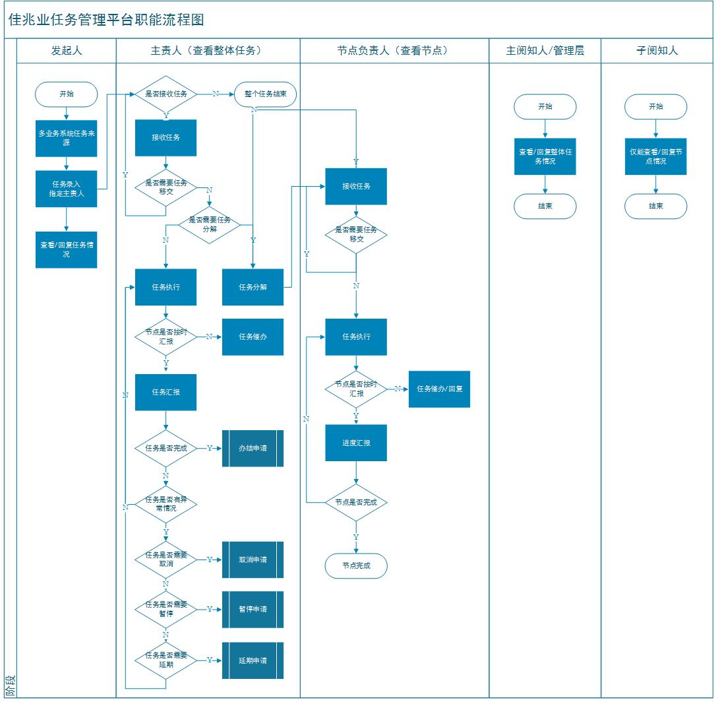
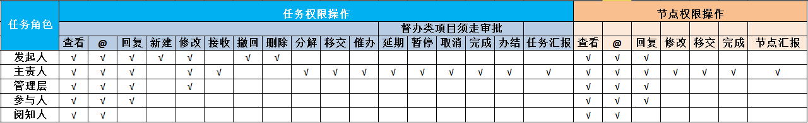
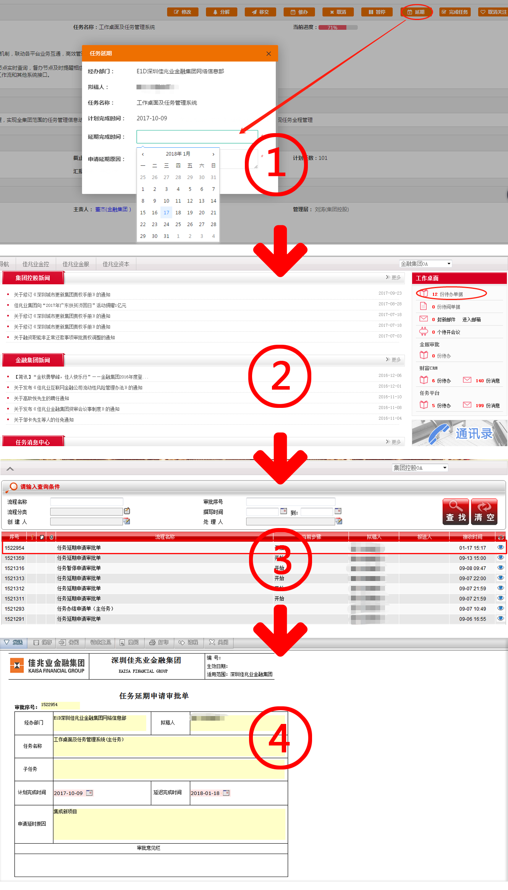
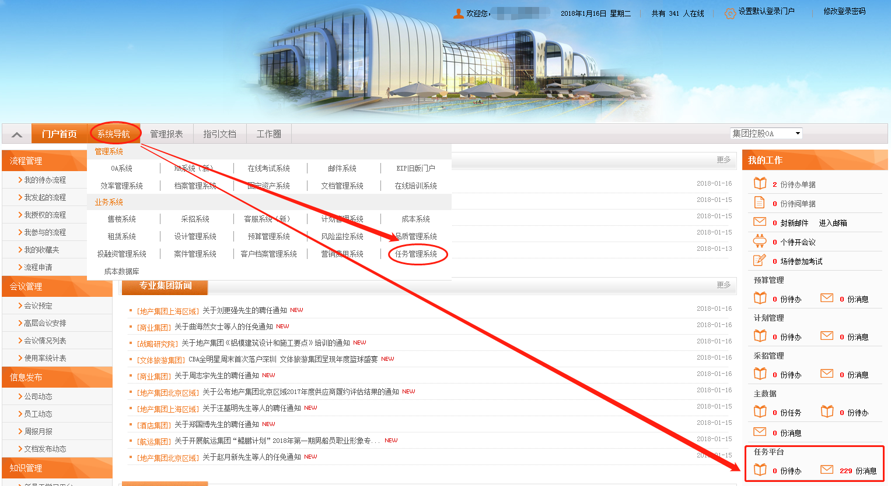
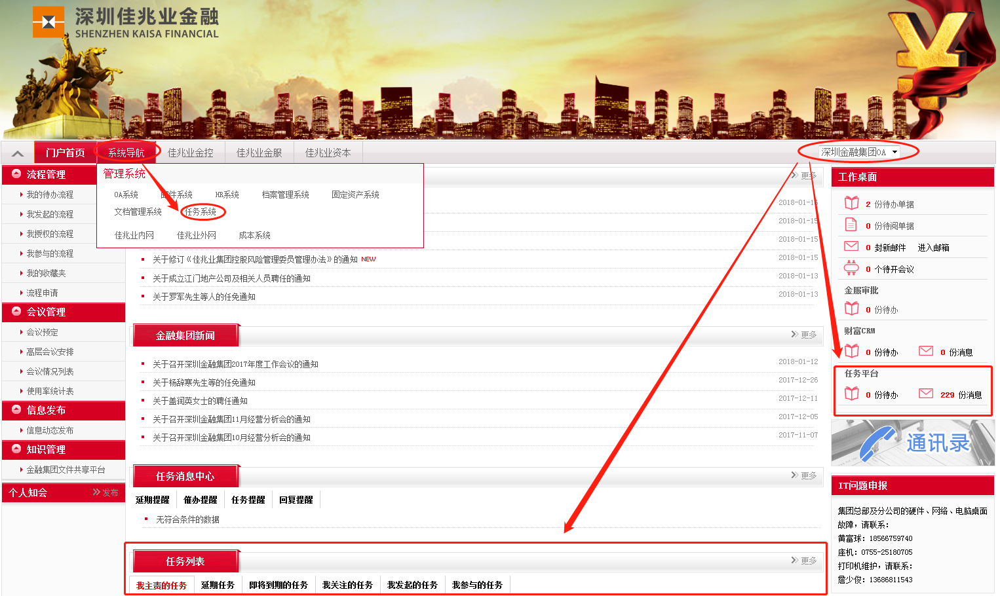
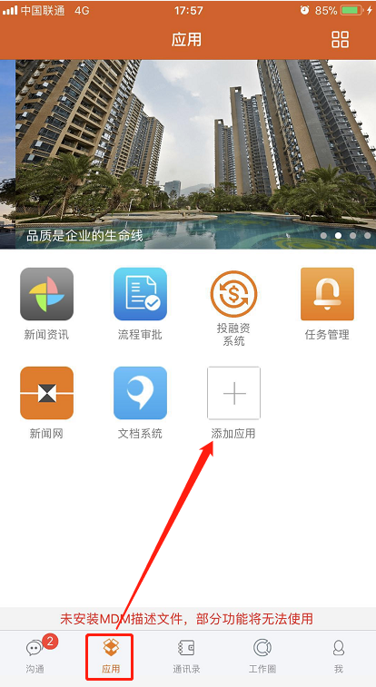
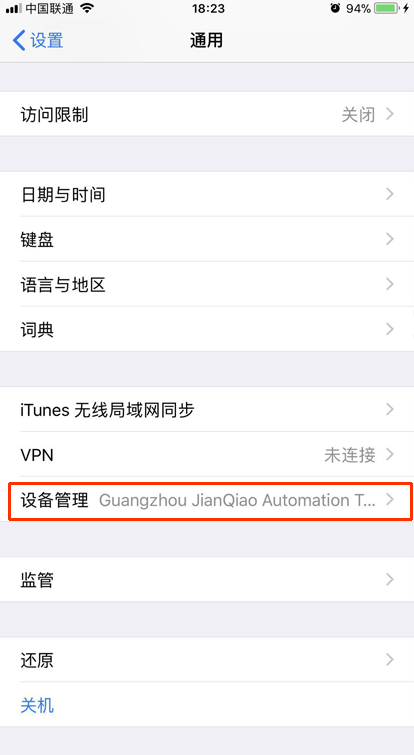
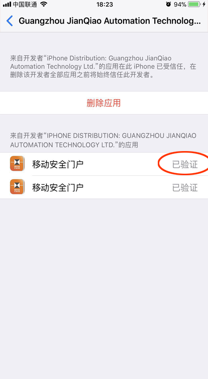

一、 操作指引
1.1整体流程

1.2名词解析
1.2.1 发起人
发起人作为任务的发起者，负责任务的录入和指派，指派后在待接收状态可以进行撤回操作；查看任务详情、查看整体汇报及回复；查看节点汇报及回复；。
1.2.2 主责人
任务的主要负责人，负责任务的修改、汇报和完成等全流程操作（接收任务、移交任务、创建子任务、新增进度反馈、完成任务、任务取消申请、任务暂停申请、任务延期申请、任务办结申请、节点催办）；并指定节点负责人及节点完成时间，统一对任务进度进行汇报，统筹、协调任务整体推进工作。
1.2.3 管理层
管理层作为任务管理者，负责整体任务的把控，跨部门资源协调，对任务推进过程中给予指导；对任务的暂停、延期、完成、取消等操作审批管理（审批流程会流转到OA工作流），只有审批通过后，主责人才能对暂停、延期、完成、取消等工作进行修改；可以查看完成率和延迟率报表；改。
1.2.4 参与人
任务的参与人员，可多个，查看任务详情、查看整体汇报及回复；查看节点汇报及回复；可对汇报进行“回复”操作。
1.2.5 阅知人
任务的阅知人员，可多个，查看任务详情、查看进度反馈及回复、查看进度汇报及查看回复；不能“回复”操作，可以“人员信息”点击任务组成员，进行@操作。
1.2.6 整体汇报
主责人对任务的整体汇报，可新增、编辑和删除（当日内）；
1.2.7 节点汇报
节点负责人对节点进行的汇报，可新增、编辑和删除（当日内）；
1.2.8 汇报频率
针对节点，节点负责人需要按照该频率进行节点汇报；
1.2.9 节点进度
节点汇报是，节点负责人根据实际情况录入的进度（百分比）；
1.2.5 10、任务进度
任务下节点进度的平均值（百分比）；
1.2.5 11、非督办类任务
非督办类任务在进行延期、取消、暂停、办结等操作时不走OA流程，直接操作即可。
1.3权限说明
简单权限说明见图示，完整权限请下载参阅

1.4审批流程
1.4.1 延期
当发起任务时，确定任务完成时间，如果未能按时完成此项工作，主责人可以发起任务延期申请（同时会自动触发工作流审批，进一步在OA工作流进行流转），经过管理层审批后，主责人即可修改时间。
1.4.2 取消
任务推进过程中，确定任务终结无须继续跟进此工作，主责人可以发起任务取消申请（同时会自动触发工作流审批，进一步在OA工作流进行流转），经过管理层审批后，任务更新为取消状态。
1.4.3 办结
当任务推进完成，各个节点也已完成，主责人可以发起任务办结申请（同时会自动触发工作流审批，进一步在OA工作流进行流转），经过管理层审批后，任务更新了办结状态，办结结束后，无法再进行进度汇报。
1.4.4 暂停
任务推进过程中，任务现阶段无须跟进此项工作，主责人可以发起暂停申请，确认暂停的时间节点及重启的时间节点（同时会自动触发工作流审批，进一步在OA工作流进行流转），经过管理层审批后，任务更新为暂停状态，此状态下无须按汇报频率汇报工作。
以任务延期作为例子：

二、 PC端入口
2.1控股门户入口

2.2深圳佳兆业金融门户入口

三、移动版操作
1、下载：
控股门户首页左下方“佳兆业集团移动安全门户”扫码下载
2、添加任务系统应用：
登录APP底部菜单“应用”添加“添加应用”找到“任务管理系统”“关注”
 
3、特殊情况：授权问题。
苹果手机：“设置”“通用”“设备管理”“Guangzhou JianQiao Automation Technology Ltd”“验证”
Android手机：“设置”“安全和隐私”“更多安全设置”“设备管理器”选择“移动安全门户”“激活”（不同机型会有少许差异）
 